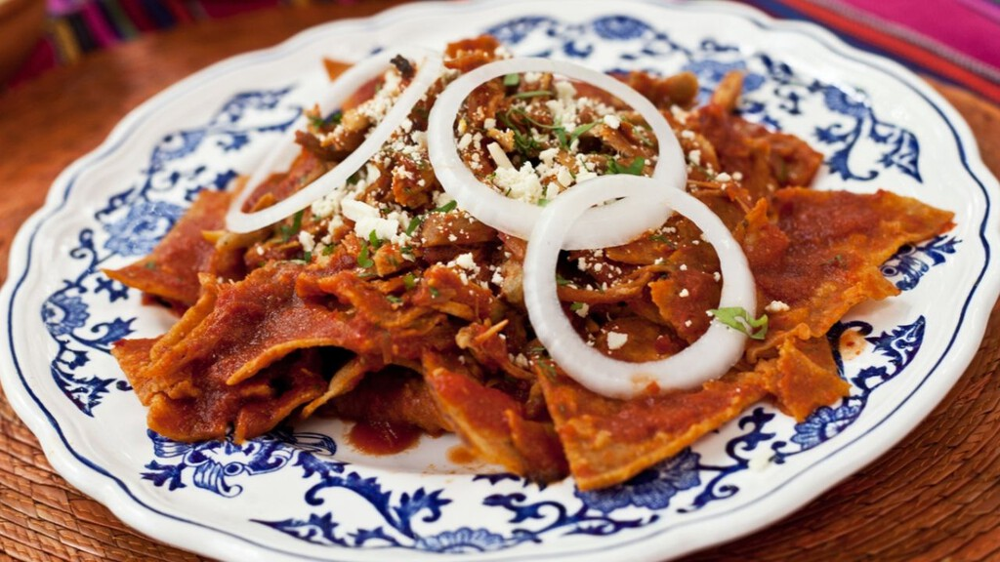

CHILAQUILES
Los chilaquiles son pedazos de tortillas que se fríen y se bañan con una salsa picosa. Aunque existe gran variedad de éstos, los clásicos son los que llevan salsa roja o salsa verde y no se les pone proteína, aunque tambien se consumen con frecuencia los chilaquiles que se cubren con mole, por ejemplo. A los chilaquiles se les espolvorea queso y usualmente se les pone crema y cebolla.
INGREDIENTES
Para la salsa
- 3 jitomates guaje
- 6 chiles guajillo limpios, semillas o venas
- 2 dientes de ajo
- 1/4 de cebolla
- 1 cucharada de aceite
- 2 ramas de epazote
- Sal al gusto
Para los chilaquiles
- 4 huevos
- 150 ml de aceite
- 400 g de totopos para chilaquiles
- 200 ml de crema ácida
- 250 g de queso fresco desmoronado
- 1/2 cebolla fileteada
- 2 tazas de frijoles negros refritos
PREPARACION
Preparar la salsa de chile guajillo
-
Hidratar los chiles:
Coloca los 6 chiles guajillo en un recipiente con agua caliente y déjalos reposar durante 15 a 20 minutos hasta que se ablanden.
-
Asar los vegetales:
Mientras los chiles se hidratan, asa en un comal o sartén los 3 jitomates guaje, los 2 dientes de ajo y el ¼ de cebolla. El objetivo es que se dore ligeramente y adquiera un toque ahumado.
-
Licuar la salsa:
Una vez asados y con los chiles ya hidratados (escúrrelos ligeramente), coloca en la licuadora los chiles, los jitomates, el ajo, la cebolla y las 2 ramas de epazote. Agrega una pizca de sal y, si lo consideras necesario, un poco del agua de remojo. Licúa hasta obtener una salsa homogénea.
-
Cocinar la salsa:
Calienta 1 cucharada de aceite en una sartén y vierte la salsa licuada. Cocina a fuego medio durante unos 10 minutos, removiendo ocasionalmente para integrar bien los sabores. Prueba y ajusta de sal. Antes de continuar, retira las ramas de epazote.
Preparar los huevos
En una sartén, calienta una parte del aceite de los 150 ml (puedes usar unos 2-3 cucharadas) y fríe los 4 huevos al gusto (pueden ser estrellados, con la yema líquida o bien cocida según tu preferencia). Reserva los huevos ya listos en un plato.
Armar los chilaquiles
-
Integrar totopos y salsa:
En una sartén grande, calienta el resto del aceite a fuego medio. Agrega los 400 g de totopos y vierte la salsa de chile guajillo caliente sobre ellos. Mezcla suavemente para que los totopos se impregnen del sabor sin llegar a empaparse por completo; se busca que queden crujientes con un toque de suavidad.
-
Calentar brevemente:
Deja que los totopos se calienten con la salsa durante aproximadamente 2 a 3 minutos. Esto permitirá que se integren los sabores sin perder la textura.
-
Integrar totopos y salsa:
Servir y decorar
- Montaje del plato:
Sirve una porción de totopos bañados en salsa en cada plato.
- Incorporar los huevos:
Coloca encima de los totopos los 4 huevos fritos (puedes cortar cada huevo si lo prefieres).
- Agregar los acompañamientos:
- Vierte 200 ml de crema ácida de manera uniforme sobre el plato.
- Espolvorea 250 g de queso fresco desmoronado.
- Decora con ½ cebolla fileteada.
- Montaje del plato:
Acompañar con frijoles:
Sirve 2 tazas de frijoles negros refritos al lado o como base sobre la que colocar los totopos, según tu preferencia.